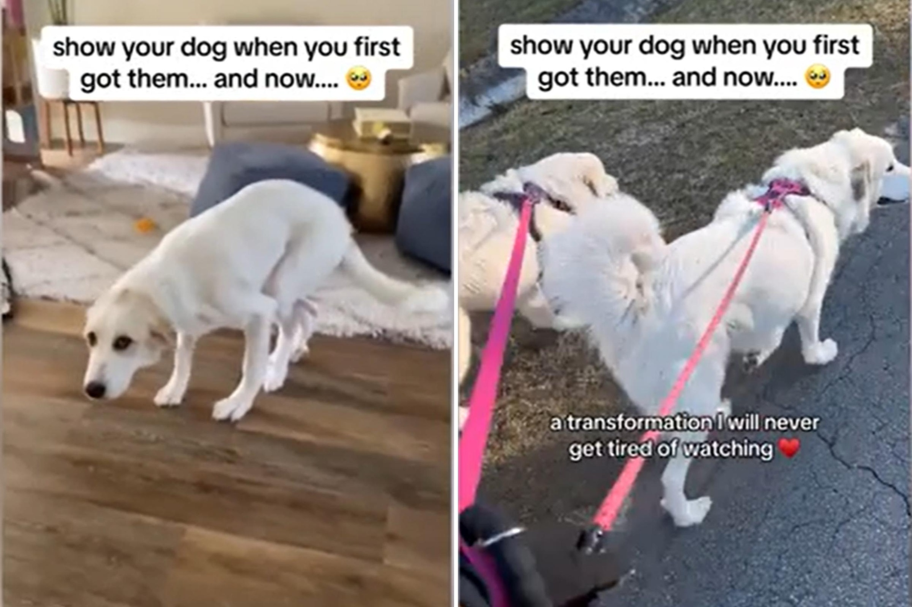

Rescue Dog Who Could Barely Walk Unrecognizable After Intense RehabA woman has shared the remarkable transformation of her two-year-old Great Pyrenees—who couldn't walk when she was first rescued, but now frolics just like any other dog. Tracy Fosterling first came across a picture of Lily, then six months old, on Facebook because her previous owner was selling her. She decided to step in as the seller "was in over her head and couldn't take care of such a big health issue," she told Newsweek. Fosterling, who lives in Florida, is not certain what caused Lily's mobility problems but the young dog could not straighten her hind legs and would drag herself around using her front legs. "It was a really sad sight to see, and looking back on videos of that time still makes me so upset," Fosterling said. "We thought it may have been a result of being left in a small cage, maybe she had broken legs or undeveloped muscle tissue. She physically couldn't straighten her legs. It's not like we could pull and they would straighten, they were simply stuck like that. But other than that, her spirits were so high." In July 2021, Fosterling welcomed Lily into her home and began the lengthy rehab process. The dog was taken to multiple veterinarians to have X-rays, blood tests and exams, funded by the National Great Pyrenees Rescue nonprofit. Eventually, Lily saw an orthopedic vet, who found that she had bilateral luxating patellas. "Essentially, her knees were permanently dislocated outwards," Fosterling said. The vet described it as "one of the worst cases they had ever seen." A luxating patella is defined by VCA Animal Hospitals as a kneecap that moves out of position. There are four levels of severity. Grade 1 means the patella can be popped out of position by applying pressure, but corrects itself once the pressure is released. Lily had Grade 4, which is when the patella is permanently out of place and can't be manually repositioned. The condition can be corrected by surgery, which involves moving the patellar ligament to its proper location and deepening the groove in the femur to keep it in place. Lily underwent double soft tissue reconstruction in September 2021, followed by a full joint reconstruction in February 2022. The dog was unable to walk after the two surgeries and had to rely on Fosterling to carry her everywhere for months. Fosterling said: "She was confined to a pen for several months, only getting in and out with me carrying her. This was essential to making sure the surgeries worked, since her condition was so severe. Eventually, she was able to start using both knees on her own and straighten them fully. "We did water rehab and a lot of other types, and thankfully it worked. The whole process was about one-and-a-half years. Sometimes I look at her and I can't believe how far she's come. "It makes me so happy. I see old videos of her and almost cry. I couldn't believe someone let her get that way without helping her. I wasn't sure if I'd ever see the day when she was running and playing on her own, but now she is just like any other dog. "She is a bit slower than the others and can't run as long as they can, just because her knees will get sore, but she is fully independent and absolutely loves life." Fosterling often looks back at videos of Lily filmed when she first brought her home, to compare them to how well she moves now. She shared a clip on TikTok showing the dog's transformation on July 4, calling it "one of [her] biggest accomplishments" in life. The video posted on the @tracyfosterling account already has more than 64,000 views and close to 4,000 likes. Many TikTokers praised Fosterling for taking such good care of Lily. One commented: "Thank you for loving that sweet baby." Another person wrote: "Some accomplishments don't even need a humble brag, you can straight up brag. I'm sure your pup knows how much love you put into their recovery." Do you have funny and adorable videos or pictures of your pet you want to share? Send them to life@newsweek.com with some details about your best friend and they could appear in our Pet of the Week lineup. |
 |